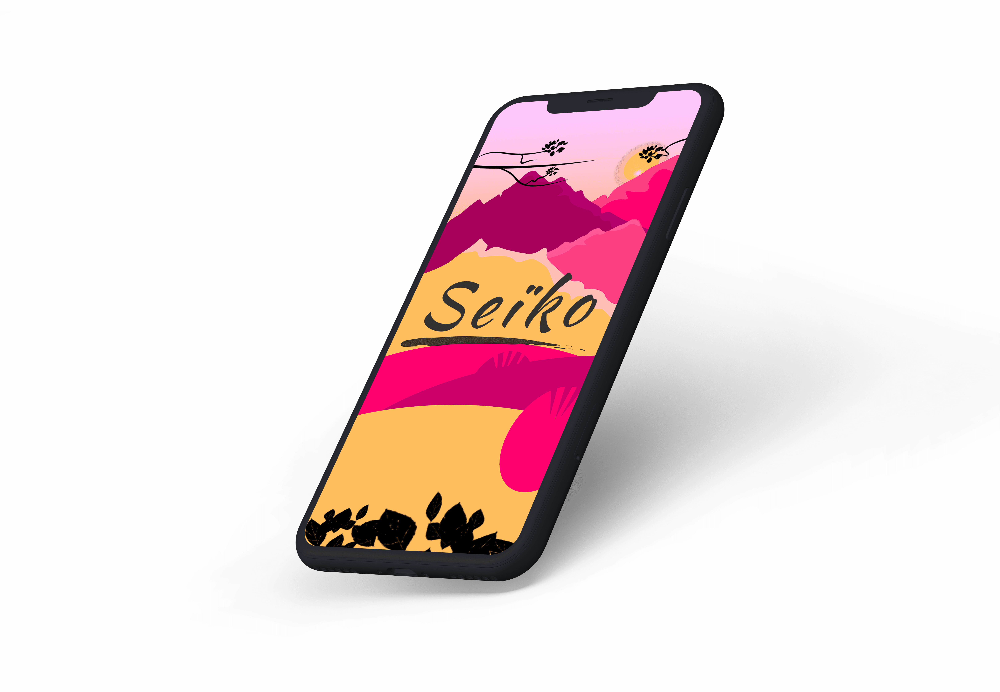
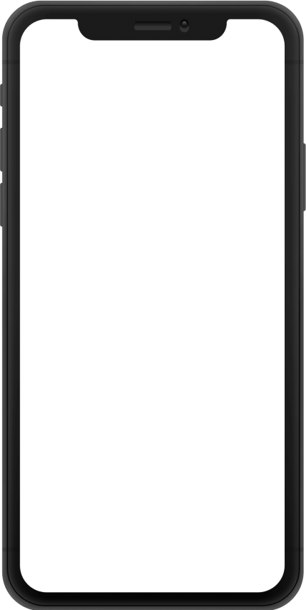

Seïko est prévu par notre équipe comme le jeu
d’introduction au principe de rééducation. Le
jeu se contrôle uniquement à l’aide de
contractions simples biceps et triceps,
permettant ainsi au patient de commencer à
s’habituer aux mouvements nécessaires à la
manipulation de sa future prothèse.
Le joueur contrôle ainsi la trajectoire d’une
étoile filante tombant du ciel, la déplaçant de
droite à gauche afin d’éviter les branches sur
son chemin.
Technologie: Unity - C#
En tant que jeu de plateforme, Seïko se base sur un gameplay simple. Il suffit ici de déplacer son personnage de droite à gauche. Il n’y a aucune contrainte de temps ni de vitesse, seule la précision compte. Le seul mode de jeu disponible est un mode infini, l’idée étant de ne pas restreindre le joueur dans son processus de rééducation.
Contrôles : Q - D
